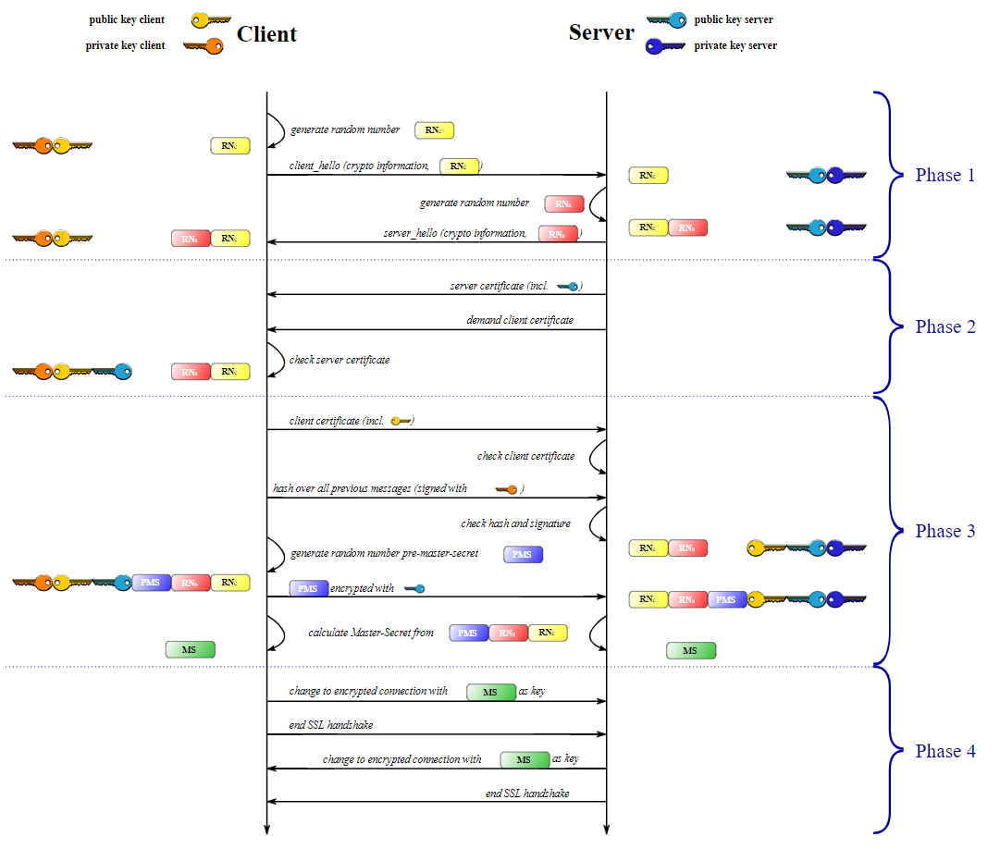
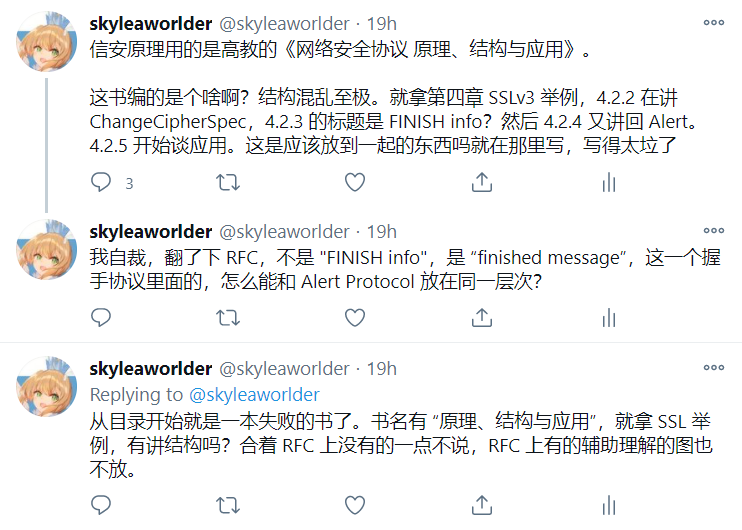

期末，怎么办
一个学期就要过去了，信安原理自然是有期末考试的。
我是觉得难，第一是因为自己没基础。一个学期过去了自己还是什么都不知道，除了感慨自己太懒散之外，也没有什么好说的。埋怨也埋怨不了别人。
期末考试对我来说是困难的，极其困难的。下面是往届信安原理考试的一道题目：
分析
SSL防重放攻击的安全机制，并比较分析其与ipsec反重放机制的主要异同点。
正常人第一感觉想来肯定是，哦，也不是像我描述得那么难嘛。
我也觉得。我不觉得题难，只觉得自己太垃圾。
可毕竟我也是粗略读过 RFC-6101 的，对 SSL 的四个 protocol 都有些印象，特别是记录协议。因此我的答案自然是：ssl 的反重放是依赖每个附在压缩块(SSLCompressed.fragment) 之后的 MAC 来判别的，因为：
1 | The MAC is generated as: |
这不算是一个一般的 MAC，这个 MAC 有 seq_num 这个东西。仔细阅读这段周围的相关 RFC-6101，我了解到对于一个 message，想来是只有一个 seq_num，（这不废话嘛？）
而且在 RFC-6106 的其他地方没有找到类似功能但是又与之不同的 seq_num，比如 F.2. 中的：
1 | To prevent message replay or modification attacks, |
再比如 5.1 的解释：
1 | sequence numbers: Each party maintains separate |
毕竟这种东西有一个就够了。那么我们就会想：“哦，SSL 防重放攻击这么看应该是通过每次 application data 的发送时附加在每个压缩段后的 MAC 中的序列号实现的？”
接收方收到加密的消息之后肯定是要解密的，在此之后，就可以把 MAC 解密，把序列号拿出来，因此来判断是否重放。我觉得这个逻辑还是说得通的。
但是这道题的答案是这么写的：
SSL防重放是通过客户端（服务器）向服务器（客户端）发送随机数来实现，期待这个随机数两次是不同的，如果有两次随机数相同，则说明发生了重放攻击。
当时是在其他同学的寝室里，我看到那个问题，脑子里面首先蹦出来的概念当然是 序列号+MAC，但是答案是这样，我当时不够肯定，也只能责怪自己 RFC 没读好。
我有了新的想法
可是我越想越不对劲。
随机数是什么时候生成的？是握手协议刚开始的时候。

我们假设在此之前没有建立过 SSL 连接（那么现在传送的报文应该是铭文吧？这个不太清楚）。我们发送随机数的目的，是为了双方利用这个随机数计算出后面的 master_secret 以及密钥交换过程中的签名(signature in key exchange messages)：
1 | master_secret = |
说随机数防重放，好的，我肯定是相信有这个做法的。
我只要维护一个随机数的存储，之后有新的随机数在握手时传给我便检查一下，这是好做的。但是我想知道的是，ssl 真的这样做吗？有什么依据吗？
openssl 在 GitHub 上面开源，所以我翻了些相关代码。
首先我直接找到了 dtls1_record_replay_check 这个函数（虽然看上去是 TLS1.0 而并非 SSLv3，但是同级目录下的 ssl3 的重放检测也是调用的这个函数）：
1 | int dtls1_record_replay_check(SSL *s, DTLS1_BITMAP *bitmap) |
首先，SSL 类型定义在 include/openssl/types.h 中：
1 | typedef struct ssl_st SSL; |
而 ssl_st 定义在 ssl/ssl_local.h 中，关于它的定义一共 700 行，就不放了。所有需要的变量，基本都可以到这个结构体中找到。
简单阅读的话，可以看到这段代码包括了 sliding window, replay check, reset sequence number 等操作。看起来就是通过这个函数保证序列号的抗重放。同时只要继续寻找，就可以在 ssl/record/rec_layer_s3.c 这个文件中找到一些相关的函数，比如 ssl3_record_sequence_update, ssl3_write_pending(在 ChangeCipherSpec 之后将挂起的密码体系设置刷到现在的配置上), RECORD_LAYER_reset_read_sequence, RECORD_LAYER_reset_write_sequence(重置记录层序列号)…
但是随机数呢？按道理也是应该可以轻松找到的。他算是握手协议中的东西，只不过很可惜我并没头绪找到握手协议的相关文件……我也感觉到需要到 ssl/statem/statem_clnt.c 找状态机变化中调用的函数，但是我的确没有那个耐心和精力，而且这和 TLS 有关，我不太了解这些协议不同版本之间的区别……所以只看了个大概就不想继续思考了：
1 | // code in ssl/ssl_sess.c |
1 | // code in ssl/statem/statem_clnt.c |
后面我也想到，找对这个随机数的处理应该直接找 ServerHello, ClientHello，但很可惜没找到。只找到了一些奇奇怪怪的赋值：
1 | // code in ssl/statem/statem_srvr.c |
1 | // code in ssl/statem/statem_lib.c |
1 | // code in ssl/ssl_lib.c |
这个时候我很自信地以为，无论是 RFC 上还是实际的实现都没有把 ClientHello.random / ServerHello.random 当成一回事。
但是会是这样吗

我把我的这本教材描述成 “RFC 本科青春教学版”。看起来我们找的练习题就是和书配套的，所以答案这么说或许有一定道理？
我之前粗略翻了几次 RFC-6101，并没有发现 random 和 anti-replay 有一毛钱的关系。上面也都看到了，举出来的使用实例都是在做消息的保密性和完整性保护，并不具备很显然的抗重放特征。
在 RFC-6101 中，random 这个词出现了 90 次，但是其中半数都是与 ClientHello / ServerHello 绑定在了一起。剩下的一半又是有相当一部分与之 “词法无关，语法有关”。唯一和这两个 Hello Msg 完全无关的，我想来就是 pre-master-secret 生成中的 46 字节的随机数了（Hello Msg 中的是 28 字节），但是这和 anti-replay 又有什么关系呢？
但我这次换了个思路。我一直在证明它是错的，证明我自己是对的。但是根本没有考虑过我是对的，而它也是对的。
很有可能 SSL 不是通过直接检测 random 来抵御重放攻击的，而是通过之前提及的 signature。抱着这种想法我又一次粗略翻阅 RFC-6101，果然在附录中发现了这句话：
1 | The signature includes the current ClientHello.random, so old signatures and temporary keys cannot be replayed. Servers may use a single temporary RSA key for multiple negotiation sessions. |
所以……事实原来是这样吗。
最后
我还是没有在 openssl 中找到 把签名解开看里面随机数是不是之前用过的 这么一段代码。我的搜索能力确实低下。
第二天(最后的最后)
于是这便成了又一个我没有解决的困惑。
一个晚上过去了，我好像什么都忘记了。
唯一没有忘记的是：考试问 SSL 怎么抗重放，我一定要写 “随机数” 上去。